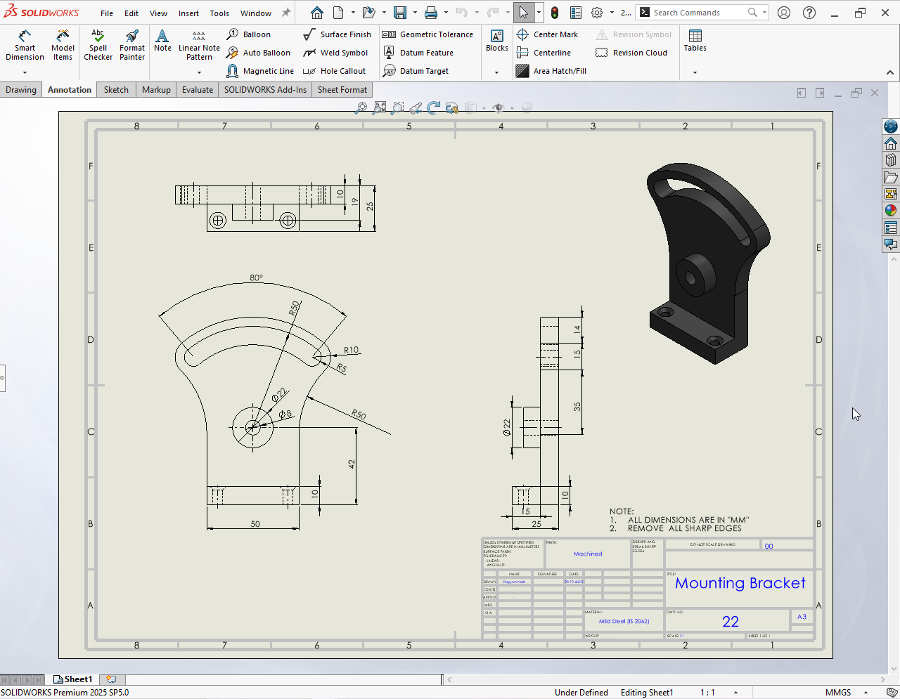

3D Mounting Bracket
This project features a 3D model of a Mounting Bracket designed in SolidWorks. The design focuses on industrial-grade accuracy, ensuring the component is suitable for mechanical assemblies that require precise mounting points and structural stability.

About Project
I initiated the design by sketching the primary profile on the Front Plane, ensuring all geometric relations were fully defined. By utilizing features like Extruded Boss/Base and Fillets, I refined the geometry to handle mechanical stress while maintaining a professional finish.
The final model demonstrates clean geometry and precise hole alignments for fastening hardware. I also performed a mass properties check to verify material distribution, which is a critical step in professional mechanical engineering workflows.
Through this project, I deepened my knowledge of Parametric Modeling and learned how to maintain an organized FeatureManager Design Tree for easier modifications and design iterations.